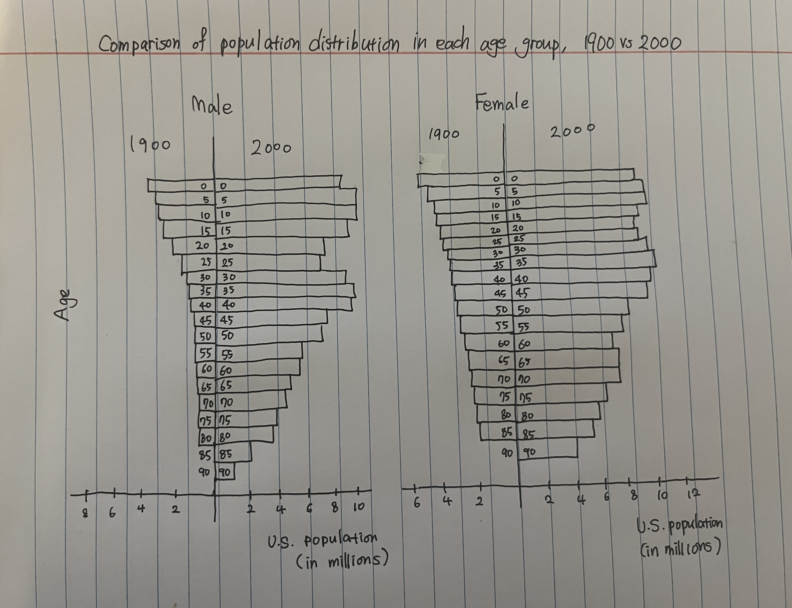
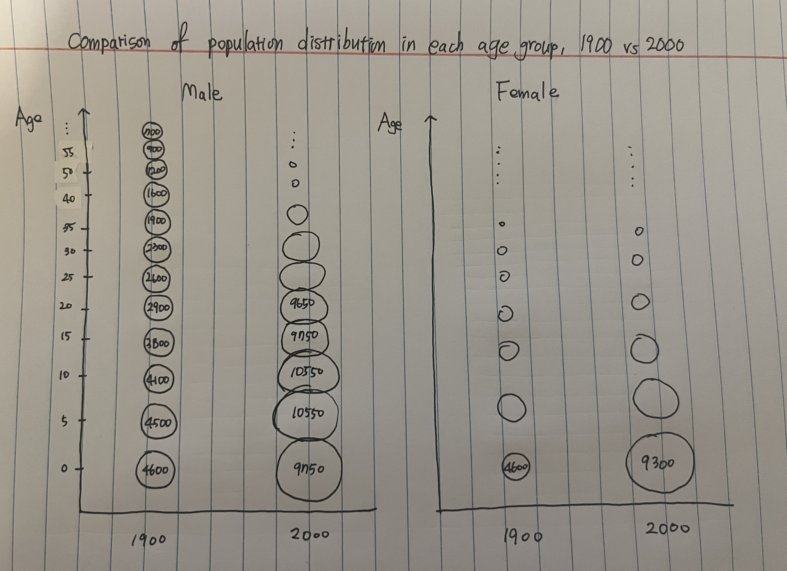
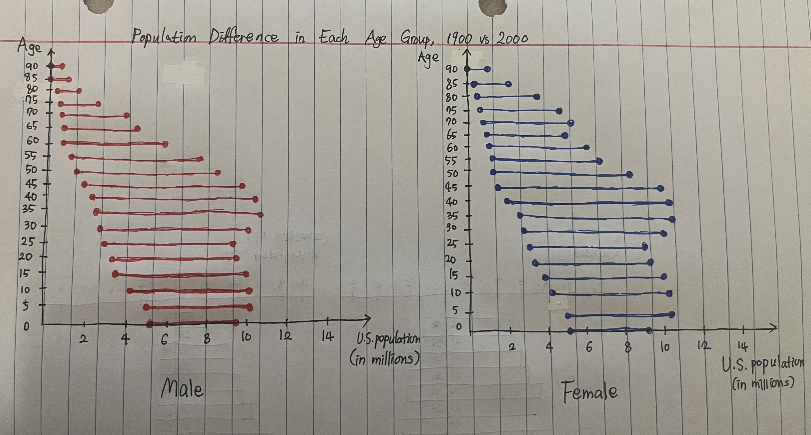
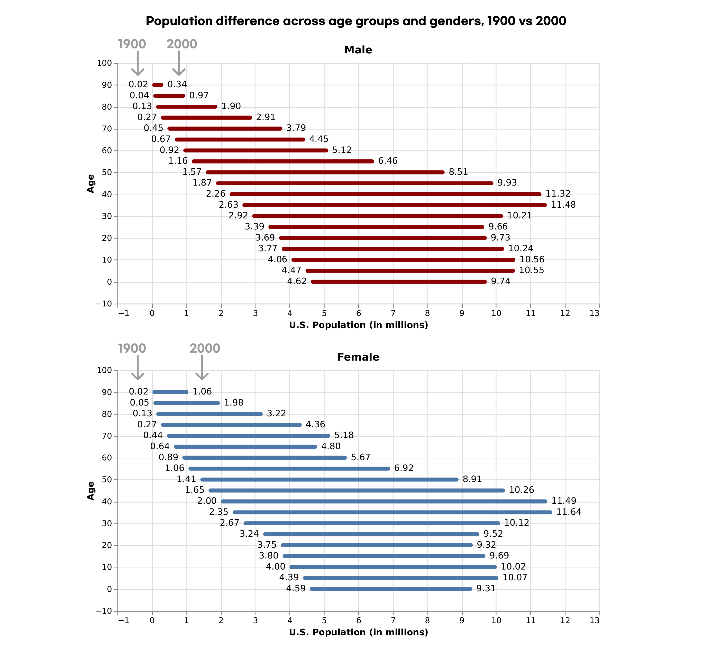

Phase One: Sketching Visualizations
Question
A question I'd like my visualizations to answer is "what is the difference of population in each age group and gender between 1900 and 2000 in the US?"Sketches

Design Rationale for Sketch 1:
- I decided that putting years next to each other is more effective than putting gender next to each other. This is because our goal is to compare the population between two years 1900 and 2000 rather than comparing two genders. Consequently, I placed the years side by side and separated the graph for each gender.
- I chose to set age as the y-axis rather than the x-axis in order to reduce confusion. If age is the x-axis, it will seem as if there is a reason for bars to go above and below the base line. However, as a y-axis, the bars for the two years are equally horizontal, so they seem more comparable to each other.
- Although this first sketch is effective in showing the distribution of population in each age group, it is limited in that it depends on the viewer to calculate the difference between the lengths of two bars. It only implicitly describes the difference between the two years.

Design Rationale for Sketch 2:
- In this sketch, the circle size depicts the number of people. This effectively shows the size of the population because the viewers can easily grasp if the number of people was large or small for each age group, gender, and year at a glance.
- One defect of the circle size is that it prevents the y-axis from being uniformly distributed, requiring a wide space for large numbers and a narrow space for small numbers. This causes the visualization to be confusing and messy.
- Another downside of using the circle size to depict the size of the population is that it may distort the numbers. The circle size is two-dimensional when the numbers are one-dimensional data. Thus, the circle size can possibly distort the actual numbers by making them seem larger or smaller than they really are.

Design Rationale for Sketch 3:
- This visualization highlights the "difference" because the line between the two dots explicitly denotes the population difference between the two years. Thus, this visualization seems to most directly answer the exploration question above.
- I plotted separately for each gender and used different colors. The red dots and lines represent the male population, whereas the blue dots and lines denote the female population.
- I chose age to be the x-axis. If age were the y-axis, the dots for the year 2000 are placed above the dots for the year 1900, which seems as if the year 2000 comes first. To prevent such confusion, I decided the age to be the x-axis so that the dots for the year 2000 and the dots for the year 1900 are equally horizontal and seem comparable to each other.
Reflection
In comparing the three sketches, each offers unique strengths and weaknesses in visualizing the population distribution between 1900 and 2000 across different age groups and genders. The first sketch effectively captures the distribution but relies on viewers to calculate differences between bar lengths, presenting an implicit representation of the contrast. The second sketch, using a circle size to represent the population, provides a quick overview but introduces potential confusion due to uneven y-axis distribution and the risk of distorting numerical values. On the other hand, the third sketch stands out by explicitly emphasizing population differences with lines connecting dots for 1900 and 2000, offering a direct answer to the exploration question. In the next phase, I believe I could further develop the third sketch that most directly answers the question "what is the difference of population in each age group and gender between 1900 and 2000 in the US?" Refinements could involve streamlining the visual elements for greater clarity, potentially exploring alternative choices for the x-axis to eliminate any potential confusion. Additionally, considering ways to integrate elements that synthesize information from all three sketches could lead to a more comprehensive and nuanced representation of the population dynamics between 1900 and 2000 in the United States.
Phase Two: Final Design
Question
A question I'd like my visualization to answer is "what is the difference of population in each age group and gender between 1900 and 2000 in the US?"Visualization

Design Process & Design Decisions
The final visualization is an enhanced version of the third sketch, incorporating three revisions to improve clarity and precision. Firstly, I introduced an annotation of the years 1900 and 2000. To address potential ambiguity, arrows now explicitly point to the left and right sides of the lines on the graph, indicating that the numbers on the left pertain to the populations in 1900, while those on the right correspond to the populations in 2000. This addition serves as a visual guide, eliminating any potential confusion and providing a more straightforward interpretation of the data.
Secondly, I introduced annotations displaying the number of people in each age group, rounded to two decimal places. This eliminates the need for viewers to estimate population size solely based on the line's starting and ending points. By incorporating these annotations, the revised visualization ensures an intuitive and precise interpretation of the data, fostering a more informed engagement with the graphical representation.
Third, in order to enhance the comparability of the visual representation, adjustments were made to the x-axis range and alignment of the two graphs. The x-axis, serving as a pivotal indicator of population size, was matched in terms of range across both graphs. Furthermore, by aligning the two graphs vertically, an intuitive comparison between the population sizes of the each gender became possible. This strategic alignment ensures that the audience can effortlessly discern the proportional differences in population distribution between two genders, facilitating a more meaningful interpretation of the data. I also chose red for males and blue for females to avoid stereotypical color choices for representing gender.
Reflection
In summary, the phase one significantly helped to refine my final design of the visualization. Through a series of iterations, I addressed deficiencies in initial ideas, resulting in a visualization that effectively addressed my question in a clear and intuitive manner. One noteworthy observation was my initial oversight of potential issues, such as the difficulty of comparison across genders and the ambiguity of which year the numbers belong to. The iterative enhancement process proved to be valuable in identifying and rectifying unforeseen problems. Looking ahead, I am interested in exploring how future visualizations can be more inclusive of non-binary genders. While it is an option to create a third graph and vertically align it below the two existing graphs, it could result in an overwhelming display of too many graphs. Therefore, alternative concepts might be needed to offer a more suitable approach to ensure inclusivity without compromising visual clarity.